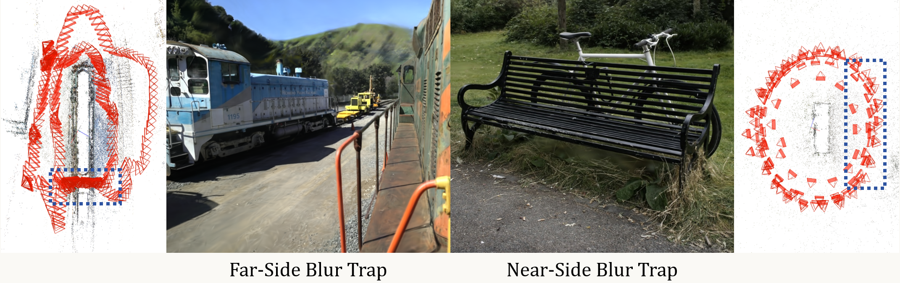
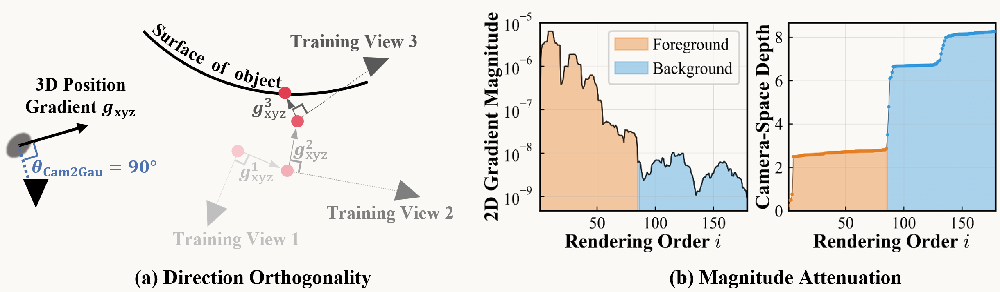
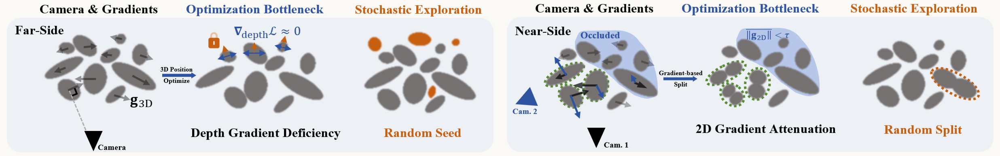

1 Hunan University 2 Nanyang Technological University * Corresponding author
📦 Code release: ✅ 3DGS · ⬜ gsplat · ⬜ Blur Trap dataset
Qualitative comparison across benchmark scenes. Our method resolves blur in both far-field (distant details) and near-field (occluded regions) while baseline methods retain the Blur Trap artifacts.
3D Gaussian Splatting (3DGS) employs Gaussian primitives for explicit scene representation, facilitating real-time, high-fidelity reconstruction and novel view synthesis of complex scenes. However, the explicit modeling inherent in 3DGS introduces a gradient bias during optimization, rendering its non-convex optimization process highly susceptible to convergence toward local suboptimal solutions. This constitutes a fundamental limitation in 3DGS optimization, which we term the Blur Trap. To address this limitation, we integrate simple explicit exploration into the 3DGS optimization framework. First, through rigorous mathematical analysis of the 3DGS optimization formulation, we identify the underlying optimization bias responsible for the Blur Trap and categorize it into two distinct subtypes: the Far-Side Blur Trap and the Near-Side Blur Trap. Subsequently, we propose two highly straightforward exploration strategies—Random Seeding and Random Splitting—to mitigate the Far-Side and Near-Side Blur Traps, respectively. Experimental validation demonstrates that the incorporation of these exploration operators effectively and complementarily overcome the Blur Trap, achieving high-quality rendering performance across multiple datasets.
In 3DGS reconstructions, certain regions remain persistently blurry despite sufficient training views. This is not random noise — it appears consistently in two kinds of regions: distant content and occluded near-field regions. The persistence of these artifacts under abundant supervision indicates that the cause is not insufficient data but something rooted in the optimization process itself. We refer to this systematic failure as the Blur Trap.
Arises in distant regions. Gaussians primitives stall at suboptimal depths with no corrective signal, leaving the rendered far field persistently blurry.
Arises in occluded foreground regions. Densification is suppressed, starving these regions of primitives and leaving the rendered near field persistently blurry.

We trace the issue back to the position gradients that drive 3DGS optimization. The diagnosis begins with one empirical fact, which then splits into two distinct gradient deficiencies — one of direction and one of magnitude.
The 3D position update of each Gaussian is composed of three branches, corresponding to the 2D projected position, the 2D covariance, and the spherical harmonic coefficients. Empirically, the 2D position component dominates the other two by two to three orders of magnitude throughout training. The position update is therefore effectively governed by 2D position gradient alone.
The two analyses below examine this single derivative term along two axes — its direction and its magnitude ↓
We prove that the 3D position update derived from this dominant 2D gradient is strictly orthogonal to the viewing ray. The optimizer can only move primitives within the image plane and never along the depth direction. No depth-directed optimization signal exists to drive distant Gaussians to their correct depth — this is the root cause of the Far-Side Blur Trap.
The same 2D gradient also serves as the densification criterion. In the $\alpha$-blending pipeline, multiple Gaussians at different depths jointly render the same pixel color, diluting the gradient contribution of each individual occluded primitive. As a result, later-ranked Gaussians receive transmittance-weighted gradients whose magnitude decays rapidly, and the densification trigger is systematically suppressed before it can fire — this is the root cause of the Near-Side Blur Trap.

The Blur Trap stems from two gradient deficiencies. (a) Direction orthogonality: the dominant gradient is orthogonal to the viewing ray, preventing depth-directed optimization — the root cause of the Far-Side Blur Trap. (b) Magnitude attenuation: multiple Gaussians at different depths jointly render the same pixel via $\alpha$-blending, diluting the gradient magnitude of each occluded primitive and suppressing densification — the root cause of the Near-Side Blur Trap.
We reframe 3DGS optimization as a high-dimensional non-convex problem that lacks exploration. Standard neural network training enjoys natural exploration sources (mini-batch noise, dropout, weight decay), but 3DGS has almost none — minibatch size of one, no implicit regularization, and a structurally biased gradient. Our remedy: two minimal exploration operators that directly and precisely compensate for what the gradient cannot supply — no architectural overhaul, no hyperparameter tuning, just a small dose of exploration.
Targets: Far-Side Blur Trap
Periodically injects candidate Gaussians at randomly sampled 3D positions across the scene. This bypasses the orthogonality constraint — new primitives can land at depths no existing Gaussian could reach through gradient updates alone. Seeds in invalid regions are removed by standard opacity pruning; seeds in plausible regions are refined by the regular optimization loop.
Targets: Near-Side Blur Trap
Periodically splits a random subset of Gaussians regardless of their accumulated 2D gradient. This bypasses the densification gate that $\alpha$-blending suppresses for occluded primitives. Even without a strong gradient signal, occluded regions receive fresh Gaussians that can begin to represent the hidden geometry.

@article{wang2026exploration,
title={Exploration Matters for Escaping the Blur Trap in 3D Gaussian Splatting},
author={Wang, Chengbo and Ma, Guozheng and Wu, Jinhong and Ji, Tie and Lao, Yizhen},
journal={arXiv preprint arXiv:2607.17965},
year={2026}
}